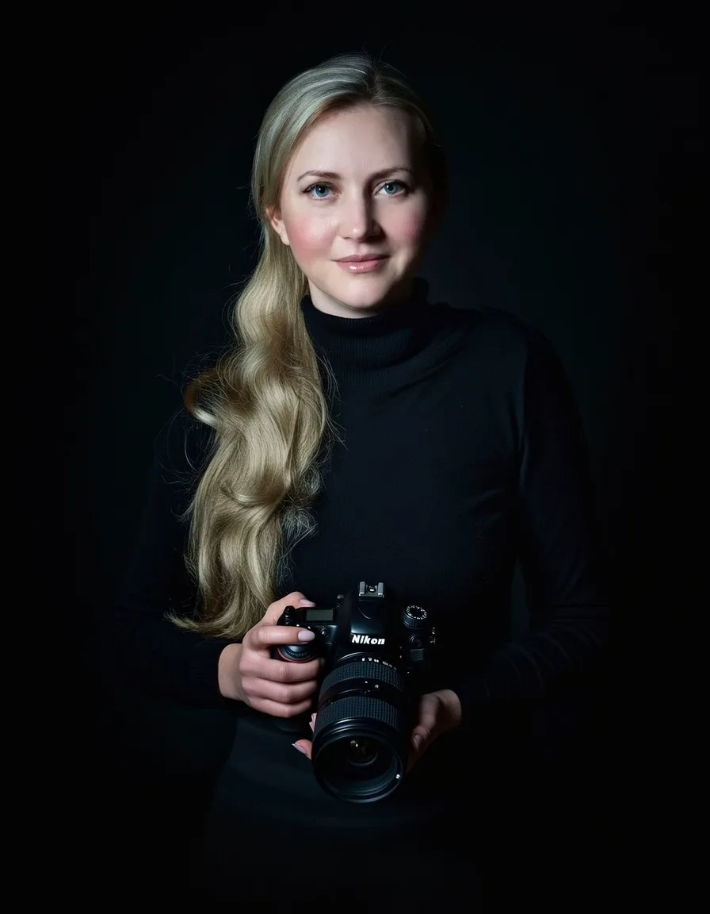
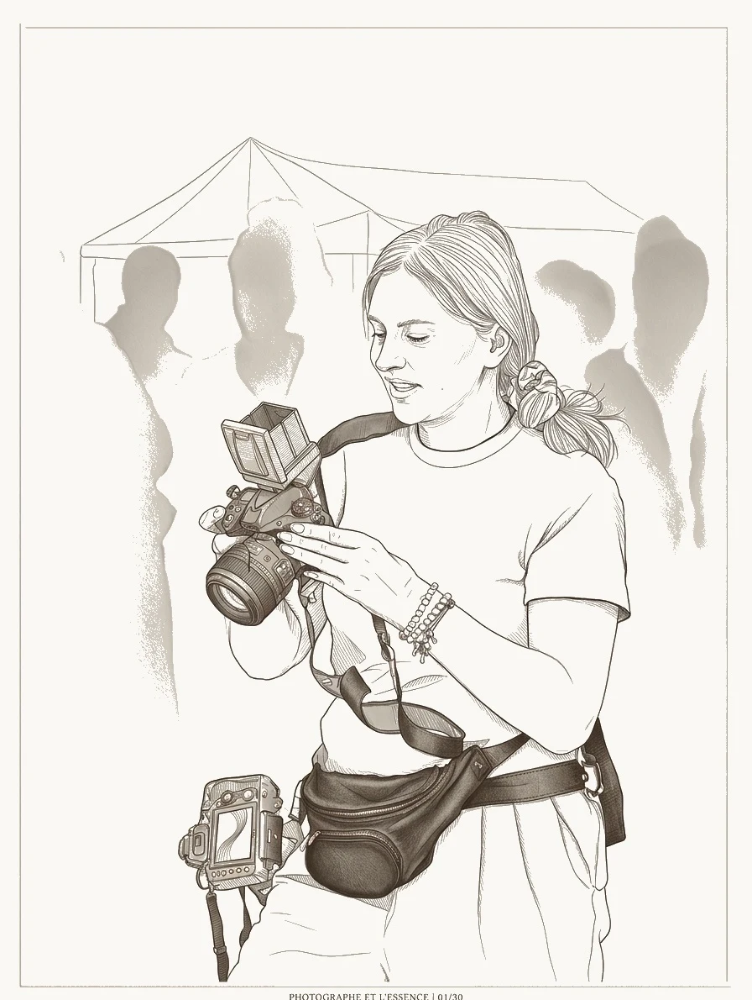

Standesamt
Kurze Begleitung
ab 590 €Ideal für das Ja-Wort, Gratulationen und ein entspanntes Paarshooting ohne Zeitdruck.
Ruhig begleitet. Echt erzählt. Für immer fühlbar.
Als Hochzeitsfotografin in Kassel halte ich seit 2012 die Momente fest, die man nicht wiederholen kann — den Blick eures Vaters am Altar, das Lachen eurer besten Freundin, den Augenblick, in dem ihr euch anschaut und wisst: Das ist es.

Wir sind beide relativ kamerascheu — abgesehen vom geplanten Paarshooting haben wir Natalia kaum bemerkt. Das hat enorm dazu beigetragen, dass sie natürliche und wunderschöne Fotos eingefangen hat.
Google-BewertungWir hätten uns keine bessere Fotografin als Natalia vorstellen können. Sie ist eine echte Künstlerin und arbeitet mit so viel Hingabe und Liebe, vom ersten Kontakt bis zur Begleitung an unserem besonderen Tag.
Google-BewertungIhre Leidenschaft für ihre Arbeit ist wirklich spürbar. Sie hat definitiv die schönsten Momente unseres besonderen Tages in ihren Fotos festgehalten.
Google-Bewertung
"Mich interessiert nicht die perfekte Pose. Mich interessiert der Blick, den er dir zuwirft, wenn er denkt, dass niemand hinschaut."
Natalia Tschischik — Hochzeitsfotografin seit 2012
Mein Ansatz ist dokumentarisches Storytelling. Die schönsten Momente sind die ungeskripteten — die leisen Blicke, die stillen Tränen, die chaotische Freude einer Feier, die sich ganz natürlich entfaltet. Über 200 Paare in Kassel und Nordhessen haben mir ihre Geschichte anvertraut — jede davon einzigartig.
— NataliaSchreibt mir eine kurze Nachricht mit eurem Datum und eurer Location. Ich melde mich innerhalb von 24 Stunden — versprochen.
In einem lockeren Videocall (ca. 20 Min.) lernen wir uns kennen. Ihr erzählt mir von eurem Tag, ich erzähle euch, wie ich arbeite.
Passt alles? Dann sichert euch euren Termin mit einer Anzahlung. Den Rest regeln wir ganz entspannt per E-Mail.
Euer Datum steht? Oder ihr seid noch mitten in der Planung? Egal — schreibt mir einfach. Jede Anfrage ist unverbindlich, und ich antworte innerhalb von 24 Stunden. Ich freue mich, eure Geschichte zu hören.
Euer Wedding-Timeline Guide für Kassel — vom Getting Ready bis zum letzten Tanz.
WeiterlesenRenthof, Sababurg, Orangerie — welche Location passt zu eurer Hochzeit?
WeiterlesenBarocke Eleganz, Karlsaue-Licht und Räume für bis zu 300 Gäste — alles über die Orangerie als Hochzeitslocation.
Weiterlesen